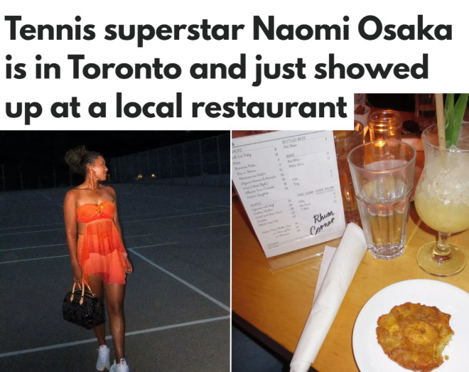
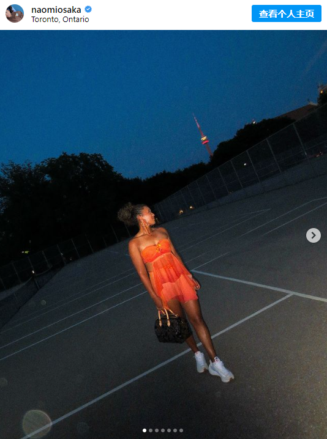
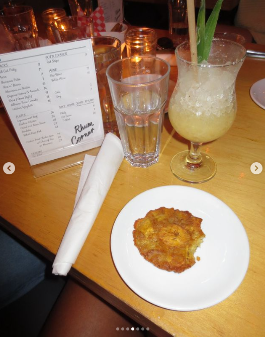
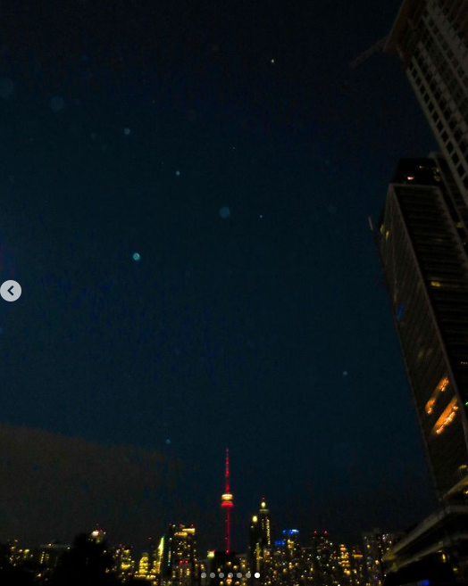

最近，多伦多真是明星云集！
据英文媒体BlogTO报道，日裔美国网球巨星大阪直美目前正在多伦多旅行，并且充分利用时间去品尝了一些非常美味的餐厅~

图源：BlogTO| Instagram
大阪直美是世界级网球冠军，她前往多伦多参加国家银行女子公开赛（National Bank Open），恰巧利用周末的时间在这个城市四处游玩，就像当地人一样在夏季长周末品尝了一些美酒和美食。
大阪直美于周日（8月4日）在Instagram上发布了一篇帖子，可以看到这位网球运动员在Trinity Bellwoods网球场摆pose拍照。

图源：Instagram
然后还拍摄了位于Dundas West街上Rhum Corner餐厅的餐桌。

图源：Instagram
从照片来看，大阪直美似乎正在享用这家餐厅超具人气的香蕉炸薯条，并且饮用了该店的招牌饮品Painkiller——一种由朗姆酒、菠萝、西番莲果、椰子和橙花调制而成的鸡尾酒。
顺便欣赏了多伦多市中心的夜景 ↓

图源：Instagram
这位网球巨星似乎是Rhum Corner餐厅的忠实粉丝，因为这并不是她第一次在这里用餐了！
2019年，大阪直美前往多伦多参加Rogers Cup比赛时，也被发现在Rhum Corner，同时还去了位于Queen West街上的居酒屋Zakkushi，这家店现在已经关闭了。
如果你也想在Sobeys体育场一睹大阪直美的风采，千万别错过National Bank公开赛的赛程哦！